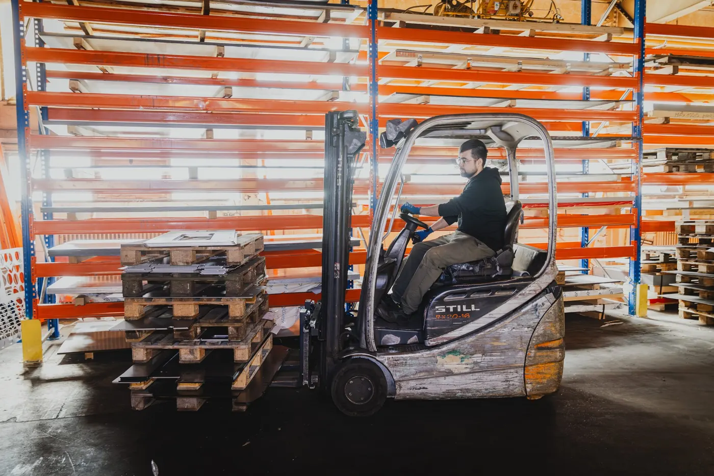
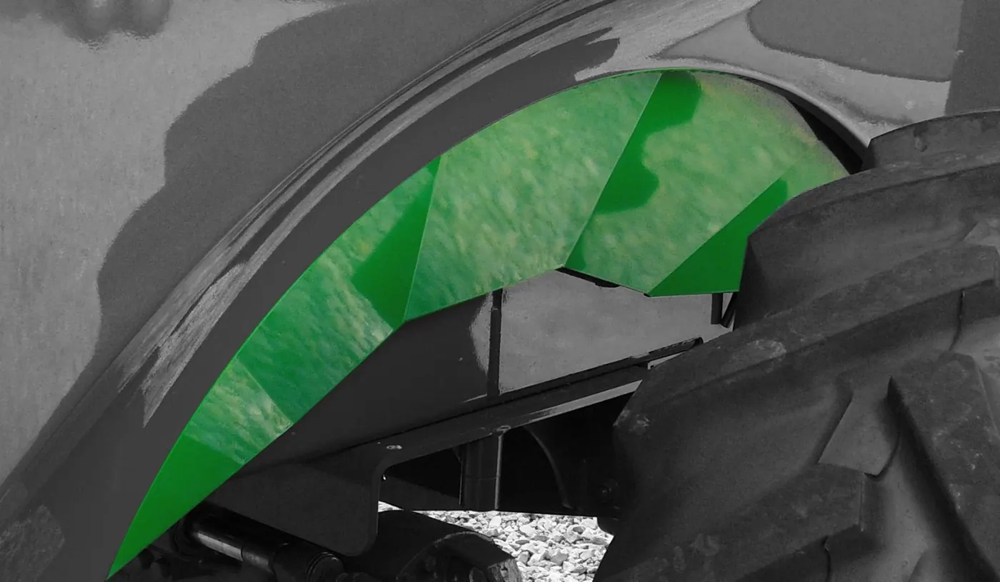
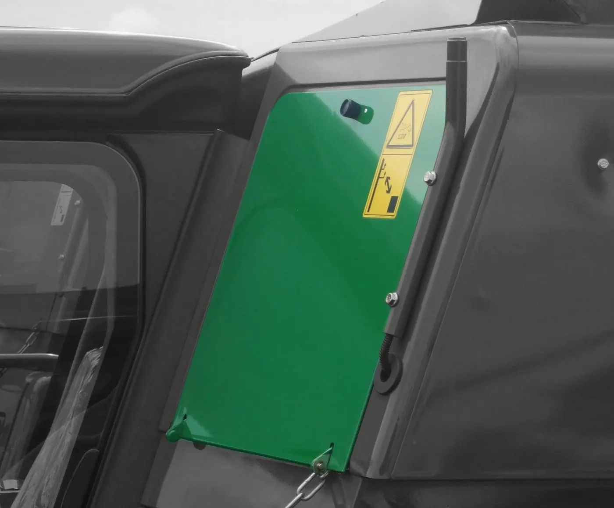
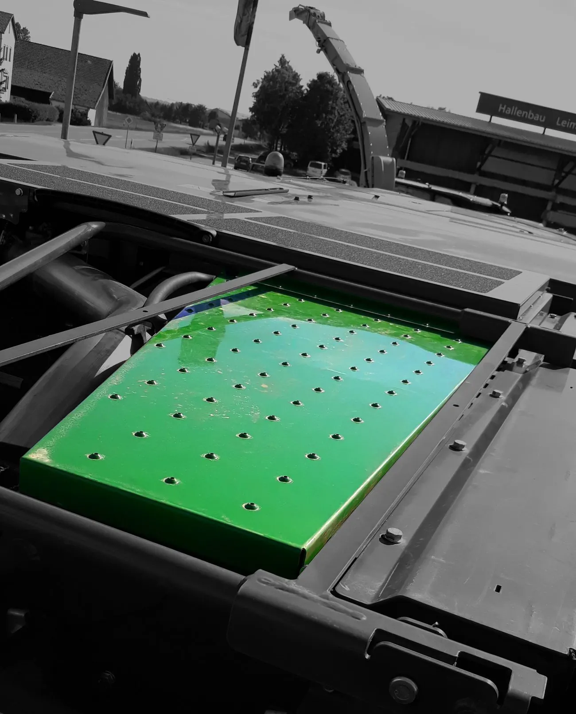

Blech in jeder Form
– seit 1996Weber Metallbau · Mallersdorf-Pfaffenberg
Laserschneiden bis 30 Millimeter Stahl und Abkanten bis 3 Meter. Alles in einer Halle in Mallersdorf-Pfaffenberg.
- bis 30 mmSchnittdicke Stahl
- 3000 × 1500 mmTafelformat
- 12 kWLaserleistung
Vom Stapel zum Teil, in einer Halle
Ihr Bauteil beginnt als flache Tafel auf einer Palette. Was danach passiert, passiert bei uns auf 30 Metern Weg: abheben, schneiden, kanten, fertig. Ohne Transport dazwischen und ohne zweiten Betrieb.
- Tafelvom Stapel gehoben
- SchnittKontur und Lochbild
- Kanteabgekantet auf Maß
- Teilgeprüft und verpackt
- 30 mmdickste Lage im Stapel
- 3000 × 1500 mmTafelformat
- 12 kWLaserleistung
- 30 mWeg vom Stapel zur Palette
Seit 1996 am selben Ort
Die Weber Metallbau GmbH gibt es seit 2017. Gewachsen ist sie aus der Lehner Metallverarbeitung von 1996. Geblieben sind der Standort und die Art, wie hier gearbeitet wird.
Mehr über uns
- 2017
- gegründet von Josef Weber
- 1996
- aus der Lehner Metallverarbeitung
- 20
- Leute in einer Halle
- ISO 9001
- zertifiziert durch die GTÜ
Zuschnitt und Kante, ein Haus
Geschnitten wird bei uns, gekantet auch. Wenige Meter weiter, ohne Transport und ohne zweiten Ansprechpartner dazwischen.


Eine Halle. Vom Stapel bis zur Palette.
Laser, Abkantpresse, Lager und Versand stehen unter einem Dach. Was hier reingeht, geht als Teil wieder raus.
- 800+
- Tonnen Blech verarbeitet in 2025
- 1.000+
- Kilometer Schnitt gelasert in 2025
Passt Ihr Teil auf unsere Anlage?
Maße eintragen. Sie sehen sofort, ob wir das Teil schneiden und kanten können, wie viele Tafeln es braucht und was ein Stück wiegt. Ohne Anmeldung und ohne Wartezeit.
- Teile je Tafel
- –
- Tafeln nötig
- –
- Gewicht je Teil
- –
- Gewicht gesamt
- –
Rechnung ohne Gewähr — sie ersetzt keine Kalkulation. Für ein Angebot brauchen wir Ihre Zeichnung. Grenzen der Anlage: Schnitt bis 30 mm, Kantlänge bis 3000 mm bei bis zu 20 mm Blechdicke.

Vom Regal auf die Palette und raus.
Versand geht in ganz Deutschland, abgeholt wird genauso oft. Montag bis Donnerstag ist die Halle ab 06:00 Uhr besetzt.
Anfahrt und KontaktDie Leute hinter den Teilen
Am Laser, an der Presse, im Büro: Das sind die Leute, die Ihr Teil in der Hand haben.


Teile, die längst im Einsatz sind
Farbig ist jeweils das, was aus unserer Halle kommt. Der Rest ist die Maschine, an der es sitzt. Bei Land- und Baumaschinen ist unser Blech oft das erste, was ein Fahrer anfasst.



Welches Teil kommt als Nächstes vom Stapel?
Schicken Sie uns die Zeichnung. Wir sagen Ihnen am Telefon, ob es auf unsere Anlage passt: bis 30 mm Stahl, Tafel 3000 × 1500 mm, Kante bis 3 m.
Oder direkt anrufen: 08772 803707